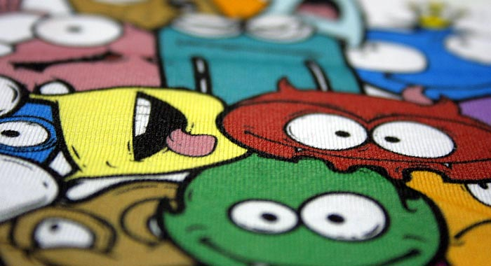
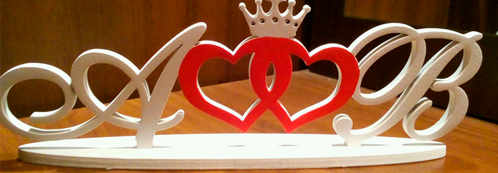
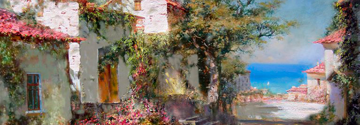

Широкоформатная печать
Широкоформатная печать – это печать изображений шириной до 3м и более (в склейку), которое применяется в наружной рекламе при любой погоде в любое время года. Стойкость печати на материалах европейских производителей достигает трех лет. Для краткосрочного использования можно применять китайские материалы. Материалы выдерживают воздействие ультрафиолетовых лучей, атмосферных осадков и температурных изменений.
Широкоформатная печать осуществляется на собственной производственной базе на самых разнообразных материалах. «Реал» предоставляет следующие услуги:
- Печать на баннерной ткани (производители: Европа, Китай, 330, 430 и 550гр). Он бывает матовым или глянцевым, блокирующим или светопропускающим, для долгосрочного и краткосрочного применения. Баннеры используются в наружной рекламе на магистральных щитах (щиты 3х6, 3х12, суперсайты, арки) и в крупноформатной рекламе (брандмауэры, оформление строительных лесов, фасадов зданий);
- Печать на пленке (матовая, глянцевая, прозрачная, транслюсцентная, перфорированная для витрин). Пленка используется при изготовлении вывесок и лайтбоксов, и при оформлении витрин и выставочных стендов. Кроме того, пленка широко применяется в рекламе на транспорте и напольной графике.
- Печать на бумаге (постерная 115-150 гр., для наружного применения, европейских производители). Этот способ печати используется для создания изображений, которые нужны рекламодателю на короткий срок, например, для выставки.
- Печать на виниловой сетке (европейских производителей). Этот материал чаще используется для печати брандмауэрных панно больших размеров. Легкая структура материала позволяет изготавливать плакаты размерами в сотни квадратных метров, а также использовать для интересных дизайнерских решений.
Цех широкоформатной печати и постпечатной обработки работают с 9.00 до 21.00ч., что позволяет выполнять заказы в кратчайшие сроки. Средний срок выполнения заказа составляет 1-2 дня. Современные методы печати позволяют создавать красочные плакаты любого размера и сложности.
Объемные буквы
Объемные буквы - это световые и не световые короба сложной формы.
Объемные буквы пользуются сегодня большой популярностью как носители рекламной информации. Не смотря на своё широкое распространение подобные конструкции всегда выглядят очень необычно и эффектно за счет многообразия форм, цветов и фактур материала. Объемные буквы могут одновременно выполнять две важные функции, с одной стороны, являясь носителем рекламной информации, а с другой стороны, выступая в роли фасадной вывески. Кроме того, оригинальные по дизайну буквы станут отличным украшением любого здания. По мнению специалистов, объемные буквы являются сегодня одним из наиболее популярных вариантов наружной рекламы, что обусловлено их легкостью в изготовлении, относительно невысокой ценой и возможностью эффектно сочетать подобные объекты с любыми другими распространенными рекламными средствами.
Как правило, объемные буквы используются для обозначения названия фирмы. Такие вывески могут как в светлое, так и в темное время суток указывать прохожим место нахождения офиса компании или магазина, для этого в конструкцию букв интегрируется светодиодная или неоновая подсветка.
Световые короба
Световая вывеска – это один из главных элементов Вашего бизнеса, являющийся лицом компании, офиса, здания, павильона. Несомненным лидером ночной рекламы ее делает встроенная подсветка, позволяющая видеть информацию как днем, так и ночью.
Одним из самых эффективных и относительно недорогих видов наружной рекламы, а потому и весьма распространенных, являются световые короба.
Световые короба – весьма распространенный и быстроразвивающийся вид световой вывески. Они относительно недороги, надежны, прочны и привлекают взгляд потребителя своей яркостью и выразительностью. Это самый удобный вид наружной рекламы работающий в круглосуточном режиме. Иначе световые короба еще называют лайтбоксами (LightBox). Лайтбокс представляет собой в буквальном смысле короб, состоящий из металлического каркаса, системы освещения и лицевой поверхности. Сам каркас может быть выполнен в виде алюминиевого профиля или жесткой сварной конструкции, либо отсутствовать вообще в силу небольшого размера световой вывески. Для лицевой панели, как правило, используют следующие расходные материалы:
- Акриловое стекло (оргстекло);
- Сотовый поликарбонат;
- Баннерная ткань.
При этом на исходный материал изображение наносится двумя способами: либо полноцветной прямой печатью, либо путем аппликации из самоклеющейся виниловой пленки, достаточно попускающей свет для того, чтобы конструкция светилась.
Лайтбоксы часто используют как способ интерьерной рекламы в виде тонких световых панелей. В качестве системы освещения используется одна из двух видов:
- Люминесцентная – недорогой способ подсветки лайтбокса для малобюджетных компаний;
- Светодиодная – самый дорогая вид подсветки, однако является более экономичной в плане электроэнергии и наиболее долговечной.
Оригинальная световая вывеска, выполненная с учетом специфики деятельности компании в сочетании с использованием современных технологий и материалов, обязательно произведет впечатление на ваших потенциальных клиентов. Современные материалы и технологии, используемые в производстве световых вывесок, позволяют нашим специалистам создавать для Вас оптимальные по цене и качеству конструкторские решения.
Интерьерная печать
Интерьерная печать используется для печати изображений с фотографическим качеством больших размеров (шириной до 1,6 м или более, но в склейку). Высокое разрешение (до 1440 dpi ) является важным параметром для наружной и интерьерной рекламы, поскольку постоянно развивающийся рынок стремится удовлетворить всё более требовательные запросы к качеству продукции.
Интерьерная печать предназначена для печати изображений на следующих материалах:
- Печать на пленке (матовая, глянцевая, прозрачная, транслюсцентная, перфорированная для витрин). Пленка используется при изготовлении вывесок и лайтбоксов, и при оформлении витрин и выставочных стендов. Кроме того, она широко применяется в рекламе на транспорте и напольной графике.
- Печать на бумаге (фотокачество 220 гр., для наружного применения, европейских производители). Этот способ печати используется для создания изображений, которые нужны рекламодателю на короткий срок, например, для выставки.
- Холст синтетический (баннер имитирующий холст). Этот вид печати используется исключительно для интерьера, по большей части в качестве полотна картины. Срок эксплуатации не ограничен.
- Печать на баннерной ткани (производители: Европа, Китай, 330, 430 и 550гр). Он бывает матовым или глянцевым, блокирующим или светопропускающим, для долгосрочного и краткосрочного применения. Баннеры используются в сфере наружной рекламы при необходимости высокого качества печати.
Интерьерная печать, предлагаемая компанией «Реал», применяется для печати изображений с высоким разрешением (от 540 до 1440 dpi), благодаря чему достигается великолепное качество печати мельчайших деталей, полутонов. Печать выполняется сольвентными чернилами. Особенности этой технологии заключаются в том, что печать не требует дополнительной ламинации.
Фотообои
Хотите, чтобы ваш интерьер украшали единственные в мире фотообои? Фото любимого человека, рисунок вашего ребенка, иллюстрация из любимой книги — пусть события вашей жизни разворачиваются в достойных декорациях.
Сегодня фотообои на стену наполнены эстетикой, изысканностью и современным исполнением. Фотообои способны подчеркнуть индивидуальность офисного помещения, придать изысканность кафе и ресторану.
В домашнем интерьере великолепно смотрятся фотообои на заказ с изображениями фотографий цветов и растений. Фотообои и фрески создадут комфорт в загородном доме и квартире, а также смогут визуально увеличить пространство фотообои для кухни или, например, спальной комнаты.
Купить фотообои нужно тем, кто хочет организовать необыкновенный интерьер своей спальни, гостиной, детской и других комнат.
Текстурные фотообои в плане монтажа схожи с поклейкой обычных обоев, и при наличии опыта таких работ можно сделать это самостоятельно. А если такого опыта нет, мы всегда готовы помочь, у нас есть грамотные специалисты, которые смогут справиться с самой сложной задачей.

Воздушные шары
Подготовка к любому торжеству - приятное, но сложное дело, вы хотите, чтобы оформление вашего праздника выглядело незабываемым, сказочным - обратитесь к специалистам. Специалисты нашей фирмы заранее продумают дизайн и аранжировку, избавят вас от хлопот и ненужной траты времени.
Мы предложим Вам то, что подойдёт именно вашему празднику: оформление шарами банкетных залов, выставок, открытие магазинов, корпоративных вечеринок и свадеб, юбилеев и детских утренников. Поможем провести раздачу рекламных шаров с символикой Вашего предприятия, изготовим объёмные фигуры и любые панно из воздушных шаров, а так же, оформим квартиру, дачу и многое другое.
Мы применяем большой спектр цветовой гаммы воздушных шаров из экологически чистого материала зарубежного производства, соответствующего санитарно-эпидемиологическому заключению и имеющие сертификаты качества.
Поможем воплотить в действительность Ваши идеи и осуществить Ваши желания. Оформление воздушными шарами - это непременный атрибут любого праздника и хорошего настроения. Разноцветные, яркие, праздничные - они легко вписываются в любой интерьер, и вместе с этим шары не дороги и доступными каждому. Воздушный шар можно рассматривать и как нестандартный носитель рекламы, поэтому мы предлагаем Вам - печать логотипа (или какой-либо иной информации) на воздушном шаре - такой сувенир в карман не спрячешь!
Открытие магазина. Яркие, разноцветные воздушные шары не только привлекут внимание гостей, но и создадут атмосферу праздника. Оформление шарами фасада сразу бросается в глаза и заметно издалека. Воздушные шары внутри помещения создают праздничную атмосферу и побуждают посетителей к покупке. Подарите каждому покупателю воздушный шарик с печатью вашего логотипа, и будьте уверены, этот подарок не только запомнится надолго, но и послужит дополнительной рекламой вашей продукции.
Корпоративный праздник - серьезное событие для каждой фирмы. Это время, когда все сотрудники собираются вместе, чтобы разделить радость своих достижений. Корпоративный праздник наполняет всех энтузиазмом и побуждает к успеху. В оформлении корпоративных торжеств есть много нюансов и особенностей, которые надо учитывать - корпоративные цвета, стиль, символика, направленность профессиональной деятельности.
"Воздушная фигура" - панно с логотипом компании, звезда, арка, сердце, букет, гирлянда - прекрасно вписываются в окружающий интерьер и становятся неотъемлемой частью праздничного торжества. Стиль корпоративных вечеринок строг и ограничен, наши дизайнеры-оформители помогут вам в декорировании помещений для создания праздничного настроения.
Свадьба - это соединение любящих сердец, одно из самых главных событий в жизни человека. И, конечно, хотелось бы, чтобы этот день остался в памяти надолго и у вас, и у ваших гостей. Украшение свадьбы воздушными шарами создаст настроение веселья. Гирлянды и гелиевые цепочки из воздушных шаров, композиции на стену за молодоженами, фольгированные сердца и свадебные кольца, арки, "воздушные водопады", разноцветные "облачка" превратят место проведения Вашей свадьбы в сказку.
День рождения - замечательный праздник. И как тут обойтись без сюрпризов! Подарок и несколько оригинальных шаров, сделает Ваш подарок ярким и поистине незабываемым. Для оформления дней рождения и юбилеев мы предлагаем гелиевые "цепочки" с поздравительными надписями, буквы и цифры из воздушных шаров, напольные и настольные композиции. Сделайте праздник воздушным и красочным, гости долго будут вспоминать Ваш день рождения!
Как удивить и порадовать своего малыша? Устройство праздника для ребёнка - всегда проблема для нас, взрослых, ни на что не хватает времени. А ведь ПРАЗДНИК для ребенка - это открытие, чудо! Подарите своему ребёнку сказку - в День Рождения, Новый Год, Рождество... Воздушные шарики - яркие, разноцветные, красивые - останутся в памяти на всю жизнь. И, конечно, ребенок любит, чтобы всего было много... Представьте себе, детскую комнату, заполненную воздушными шарами, клоуна или любимого сказочного героя из воздушных шариков - это приведёт в восторг даже взрослого человека.
14 февраля - день Святого Валентина или День Всех Влюбленных. В этот день, даже если Вы самый робкий и нерешительный человек - можно не скрывать свои чувства. И, конечно, День Всех Влюбленных должен быть оформлен соответствующим образом.
Интересны, и часто используются большие воздушные шары. Они издалека привлекают внимание, поддержат всеобщий праздничный тон, а также выделят Вас среди окружающего многоцветья.
Оформление воздушными шарами спортивных мероприятий. Любые соревнования - это праздник, для участников, для зрителей. И воздушные шары, аэростаты и пневмофигуры на чемпионатах и выступлениях спортсменов стали доброй традицией. Панно из воздушных шаров с эмблемами состязаний, логотипами спонсоров, запуск воздушных шаров, рекламные растяжки и баннеры поддержат боевой настрой соревнующихся и создадут праздничное настроение у болельщиков.
Выпускной вечер - это событие, которое запоминается навсегда. Последний звонок, выпускной вечер становятся для школьников воротами, открывающими перед ними путь во взрослую жизнь, для учителей и родителей это событие знаменует собой завершение важного этапа жизни и признание самостоятельности своих детей. Композиции из шаров подчеркнут торжественность происходящего и внесут яркость и веселье.
В оформлении воздушными шарами очень часто используются напольные и настольные композиции из воздушных шаров, называемые также - букетами. Такие композиции прекрасно дополняют оформление зала и используются в основном для заполнения визуальных "пустот".
Дарите друг другу хорошее настроение!

“Реал” предлагает комплекс услуг, способный реализовать творческие идеи предстоящих событий, а именно, нанесение любого изображения на текстиль методом высококачественной сублимационной печати.
Данная услуга ограничивается лишь пожеланиями клиента и фантазией дизайнеров.
Печать государственных и корпоративных флагов различных размеров: от маленьких флажков на рабочем столе до огромных, развевающихся полотнищ на 6-18-метровых мачтах. Предлагается широкий выбор тканей и видов печати: на таффете (полиэфирный шелк), шармусе и блокауте односторонняя или двусторонняя печать, флажной сетке, габардине и т.д. “Реал” заботится о своих клиентах и готов предоставлять флагштоки, кронштейны и другие детали для крепления по желанию заказчика.
Вымпел - не просто сувенир для делового партнера, но и награда, и декоративный элемент, и знак отличия в системе мотивации персонала компании и подарок на семейном торжестве. Изготавливаются по макету заказчика различных размеров с комплексом дополнительных деталей, таких как тесьма, бахрома, кисточки.
Еще одним из направлений применения данной печати может быть создание корпоративной одежды или ее элементов, от шейных платков и галстуков с логотипом фирмы, нашивок и шевронов, командных жилетов на спортивных мероприятиях, до огромных полотнищ спортивных фанатов. От маленьких сумок для упаковки подарков до корпоративной упаковки бутиков.
Возможности применения печати на текстиле очень широки, позволяют реализовать самые смелые замыслы в оформлении интерьеров, в том числе печать календарей, постеров, огромных панно и декораций.
В отличие от бумажного носителя ткань лучше передает индивидуальность и теплоту изображения. Шторы, скатерти, диванные подушки, покрывала и текстильные чехлы на стулья с неповторимым рисунком или собственным фото создадут особый уют и эксклюзивность Вашего интерьера.
Особенность данного производства заключается в том, что ткань может быть самой разнообразной: прозрачной и легкой как вуаль, прохладной и струящейся как шелк или атлас, или же плотной и матовой как габардин, сатен или микрофибра. Все это безграничное количество вариантов работы с тканью вы можете заказать в “Реале”.
Благодаря собственному печатному и швейному производству, “Реал” создает мобильные декорации, стенды, занавеси для стен, сувениры. Вы можете позволить себе творить и экспериментировать, используя тканевый носитель в оформлении витрин и интерьеров, а также собственного дома.

Лазерная резка
Лазерная резка - это современный способ раскроя и гравировки различных листовых материалов дляизготовления рекламной продукции. Лазер СО2 (инфракрасный) с выходной мощностью до 80 Вт для обработки неметаллических материалов (дерево, резина, текстиль, оргстекло, полистирол, фанера, кожа). Используется для изготовления гардеробных номерков и шильд, брелоков и сувениров, настольных подставок, грамот, табличек и указателей, подставок под телефон и декоративных тарелок.
Сфокусированный лазерный луч регулируемой мощности – идеальный инструмент, который обеспечивает качественную гладкую поверхность кромки реза и используется для кроя ткани, бумаги, картона, акрилового стекла.
Лазерная резка имеет следующие преимущества:
- профиль реза ровный и часто не требует дополнительной обработки;
- высокая скорость раскроя;
- резка сложных рисунков небольших размеров;
- резка как единичных экземпляров, так больших серийных заказов;
Лазерная гравировка - один из наиболее распространенных методов нанесения изображения на сувениры и подарки для того, чтобы подчеркнуть исключительную принадлежность предмета какой-либо организации, компании или физическому лицу.
Кроме того, лазерная гравировка используется в различных отраслях промышленности и машиностроении для нанесения на изделия логотипа компании, серийных номеров, штрих-кодов, нумерации деталей и т. п.
Более подробную информацию о лазерной резке читайте на сайте www.laserco.ru
Плоттерная резка
Рекламные материалы часто представляют собой сложные композиции. Они составляются из отдельных частей при помощи такого инструмента как плоттерная резка. Она позволяет получать изображения практически из любых материалов, в том числе — термопереносной пленки, бумаги. Выбор материала осуществляется на основе потребностей заказчика, но чаще других материалов используется виниловая пленка на самоклеящейся основе. Стоимость плоттерной резки формируется в основном не видом исходного материала, а высотой символов или площадью изображения. Современные технологии производства позволяют оперативно и по доступным ценам получать изображения заданного размера.
Сферы применения плоттерной резки:
- Производство трафаретов.
- Изготовление рекламных материалов для витрин, щитов, табличек, установленных на объектах недвижимости.
- Изготовление рекламных материалов для размещения на автомобилях, автобусах, трамваях и других транспортных средствах.
- Производство предупреждающих и предписывающих знаков на светоотражающих пленках.

Фреска
В настоящее время появился метод создания росписи фресок, позволяющий совместить классическую технологию древности с возможностями современного производства. В прежние времена художники тратили немалое время на роспись фрески, подготавливая основу и старательно выписывая каждую деталь. Настенные фрески украшали только храмы и дома богатых людей. Современная технология позволяет сделать такой вид живописи как фреска более доступным и быстрым, благодаря возможности переноса цифровых изображений на уникальную основу. Таким образом, получается цифровая фреска – оригинальная изюминка практически в любом интерьере
Современные программы и оборудование позволяют компании учесть размеры и конфигурацию любой декорируемой поверхности, принять во внимание имеющиеся архитектурные элементы (двери, окна, балки) и создать индивидуальную фреску для конкретного помещения. Основа с нанесённым изображением крепится на декорируемую поверхность так же, как и обои.
Метод фрескографии базируется на старинной технологии, которую практикует с XVIII века французская фабрика Zuber для изготовления дорогих обоев и тканей с помощью старинных печатных досок. Чтобы создать один панорамный пейзаж производители использовали тысячи досок. Одним из таких произведений является фреска «Дикари Тихого океана», украшающая по сей день Зал дипломатических приёмов Белого дома. В отличие от обоев фрескография исполняется на едином полотне с учётом всех особенностей декорируемого помещения.
Прочие работы
Разработаем и произведем любое нестандартное оборудование: от настольного макета до современной лабораторной установки.
Многолетнее сотрудничество с ведущими учебными заведениями страны позволило нам освоить производство макетов и лабораторных установок как для учебных, так и для научных целей.
В сотрудничестве с преподавателями ФГБОУ ВО “УГНТУ” нами были изготовлены:
- Макеты насосов и арматуры из натурных образцов (2009 г.)
- Учебный тренажер по исследованию работы магистрального нефтепровода (2-115, 2010 г.)
- Модернизация установки эжекторного слива нефти и нефтепродуктов из железнодорожных цистерн (2-116, 2010 г.)
- Установка для моделирования гидродинамических процессов (МехМ-32, 2014 г)
- Установка для проведения исследований по мерзлоте (МехМ-32, 2014 г)